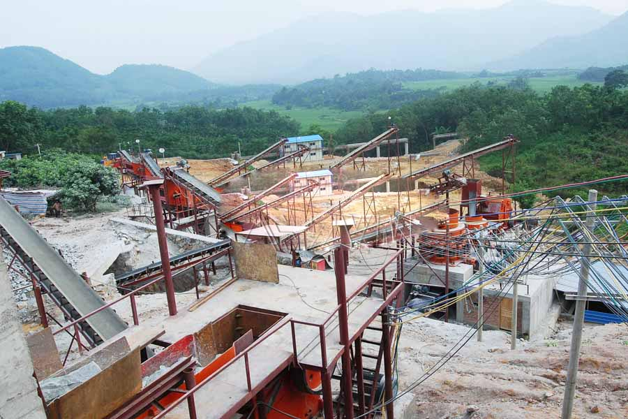

Construction waste crushing production line

Mobile construction waste crushing station for urban construction waste crushing.
best stone crusher plant
best stone crusher plant. CAG from Nissan can offer dozens of tons, hundreds of tons, thousands of tons and tons of stone production line a full set of equipment, several different configurations, minimize the amount of investment, maximize productivity and economic efficiency.
CAG Machinery Manufacturing Co., Ltd. specializes in stone production line, sand production line, sand production line, stone production line, stone production line, sand production line equipment.

Stone production line
CAG Machinery (Stone production line) in mineral processing aspects widely used, many customers get more benefits, CAG product also mainly for minerals, rock crusher, mineral grinding, sand stone and mineral processing and other fields. We provide Stone production line technical guidance, based on your specific needs, for your rational design of production lines.
Because the tariff is low, you can (Stone production line) to save a lot of costs, it can also be purchased to get more benefits, our products and designs for you is really value for money.
CAG Heavy Industries is specialized in producing stone machine equipment manufacturers, and to undertake a variety of sand production line, material production line, stone production line complete set of equipment, stone production line used stone crushing machine, stone machine and equipment for gravel, and finally delivered to.
Stone production line equipment configuration:
vibrating feeder + PE series jaw crusher + PF series impact crusher + belt conveyor + circular vibrating sieve;
vibrating feeder + PY series cone crusher / PE series jaw crusher + belt conveyor + circular vibrating screen;
vibrating feeder + PE series jaw crusher + PF series impact crusher + PCX series vertical shaft impact crusher + circular vibrating screen + belt conveyor.
| Production capacity (TPH) | 50-80 | 80-120 | 120-180 | 180-250 | 250-320 | 320-420 |
|---|---|---|---|---|---|---|
| Vibrating Feeder | ZSW100 | ZSW150 | ZSW250 | ZSW300 | ZSW450 | ZSW500 |
| Jaw crusher | PE500*750 | PE600*900 | PE750*1060 | PE900*1060 | PE900*1200 | PE1000*1200 |
| Cone crusher | PYGB900 | PYGB1100 | PYGB1300 | PYGB1750 | PYGB1300 ×2 | PYGB17500 ×2 |
| Vibrating Screen | YK1245 | YK1545 | YK1854 | YK2160 | YK1854 ×2 | YK2160 ×2 |
| Belt conveyors | B650 | B800 | B1000 | B1000 | B1200 | B1200 |
| Feed size | < 420mm | < 500mm | < 630mm | < 685mm | < 750mm | < 850mm |
CAG Machinery Manufacturing Co., Ltd. specializes in stone production line, sand production line, sand production line, stone production line, stone production line, sand production line equipment.
best stone crusher plant. CAG Heavy Industries is specialized in producing stone machine equipment manufacturers, and to undertake a variety of sand production line, material production line, stone production line complete set of equipment, stone production line used stone crushing machine, stone machine and equipment for gravel, and finally delivered to.
Leave Me A Message, Now
If you have any questions regarding equipment prices, production line configuration or other problems, you can send a message to us, we will contact you soon.